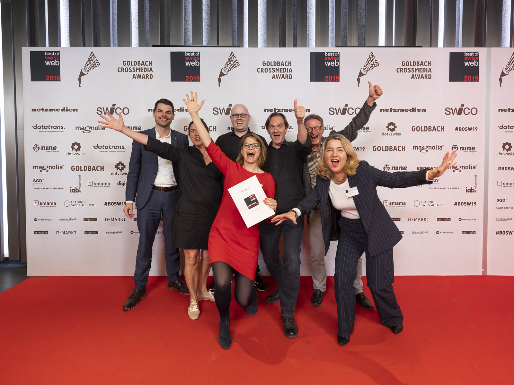

Best of Swiss Web (2019)
Zusammen mit unserer Partnerfirma Netcetera haben wir im Auftrag der Stiftung Pro Juventute die Plattform Feriennet entwickelt. Ferienaktivitäten für Kinder können mit der Plattform einfach geplant, koordiniert, und abgewickelt werden. Das bedeutet viel Freude für die Kinder und weniger Stress für deren Eltern während den Schulferien. Auch die Jury des Best of Swiss Web Award hat diese clevere Planungs- und Buchungsplattform im April 2019 honoriert: Feriennet gewinnt Silber in der Kategorie Public Affairs.
OneGov Award (2018)
Der Verein OneGov.ch hat an seiner 7. Generalversammlung in St. Gallen zum ersten Mal den OneGov Award für innovative Ideen, ausserorderentliche Leistungen und hervorragende Projekte vergeben. Den OneGov Award 2018 erhält die Stiftung Pro Juventute für «Feriennet – Die Buchungsplattform für betreute Ferienangebote». Die Jury haben der Cloudbetrieb, die effiziente Angebotserfassung für die Veranstalter, die attraktive Präsentation der Ferienangebote für Kinder und Eltern, die direkte Buchung an der Restplatzbörse sowie die innovative Idee der Angebotszuteilung nach dem Gale-Shapley-Algorithmus überzeugt.
Swiss Quality Award - Innovations in Healthcare (2017)
Die von seantis entwickelte Patienten-App für den datengestützten Dialog zwischen Arzt und Patient hat bei der nationalen Preisausschreibung die Jury überzeugt und wurde mit dem 2. Preis ausgezeichnet. Die Krankheitsaktivität wie Gelenkschmerzen und Hautbefall sowie die Medikamenteneinnahme zwischen den Arztkontrollen werden über die App dokumentiert. Dies erlaubt ein präziseres Monitoring der Krankheit und verbessert die Therapieeinstellung.
Best of Swiss Web (2016)
An der Award Night im Kongresshaus Zürich durfte seantis 2016 einen begehrten «Best of Swiss Web» Award für die OneGov Cloud E-Government-Plattform entgegennehmen. Best of Swiss Web ist eine Initiative der simsa (Swiss Internet Industry Association), sowie der Netzmedien AG, dem führende Fachmedienunternehmen für ICT, Web, Telekommunikation und Unterhaltungselektronik der Schweiz. Der Preis ist nach eigenem Bekunden die älteste Internetauszeichnung Europas.
Innovationsförderung E-Government Schweiz (2016)
Im Rahmen des Schwerpunktplan Innovationen 2016/2017 hat die Geschäftsstelle E-Government Schweiz (Innovationsförderung) für das Projekt «Online Portal für Wahl- und Abstimmungsresultate» einen Beitrag von CHF 40’000 gesprochen. Das Projekt ist eines von vier unterstützten Projekten im Rahmen der Innovationensförderung 2016/2017. seantis hat das Portal für die drei Kantone Graubünden, Schwyz und Zug entwickelt.
